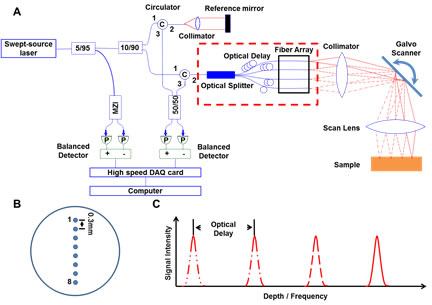
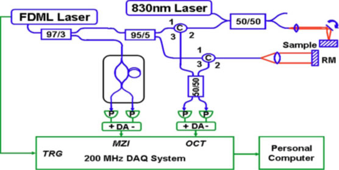
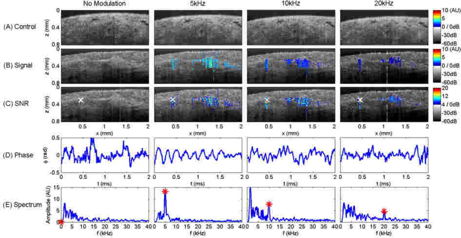
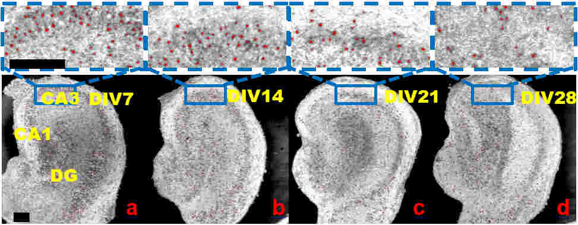
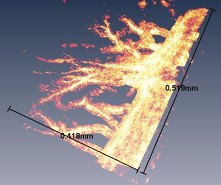

Research
-
Technology Development 01: Space-div ision multiplexing optical coherence tomography (SDM-OCT)High speed, high resolution and high sensitivity are desirable for optical coherence tomography (OCT). We demonstrate a spacedivision multiplexing (SDM) technology that translates long coherence length of a commercially available wavelength tunable laser into high OCT imaging speed. We achieved an effective 800,000 A-scans/s imaging speed using a 100,000 Hz tunable vertical cavity surface-emitting laser (VCSEL). A sensitivity of 94.6 dB and a roll-off of < 2 dB over ~30 mm imaging depth were measured from a single channel in the prototype SDM-OCT system. An axial resolution of ~11 μm in air (or ~8.3 μm in tissue) was achieved throughout the entire depth range. The SDM technology provides a new orthogonal dimension for further speed improvement for OCT with favorable cost scaling. SDMOCT also preserves image resolution and allows synchronized crosssectional and three-dimensional (3D) imaging of biological samples, enabling new biomedical applications.Concept for SDM-OCT. a). Schematic diagram of the prototype SDM-OCT system. The key of the technology is to create multiple illumination beams on the sample simultaneously, while having different optical delays for each beam (see the red rectangular region). A single detection channel was used to collect signals from all beams simultaneously. b). A 1x8 fiber array with 300 μm spacing between individual fibers was used in the prototype system. c). Each beam was optically delayed. Signals from different beams (different sample locations) were presented at different frequency range (i.e. imaging depth). For simplicity, only 4 beams are shown.Ref: Zhou et al, Optics Express, 21(16): 19219-19227, 2013.
-
Technology Development 02: Molecular-targeted OCT and OCM for cancer detectionOCT is a powerful tool for assessing tissue architectural morphology. It enables 3D imaging with resolutions approaching standard histopathology (a few microns), and it can be performed in vivo and in real-time without the need to remove and process specimens. OCM combines coherence-gated detection with confocal microscopy in order to achieve high transverse resolutions, thus enabling 3D visualization of cellular features. However, current OCT and OCM imaging technologies have not been able to leverage the recent advances in molecular-targeted contrast agents that are revolutionizing biomedicine. In this project, we will develop and validate techniques that enable molecular contrast for 3D-OCT and OCM. The successful completion of this project will allow both the structure and pathological states of tissue to be imaged in 3D, in vivo, and in real time with micron-level spatial resolutions at multiple scales. This work will lay the foundation for a wide range of fundamental research, small animal imaging, and future clinical applications in humans. This work will also serve as a starting point for the OCT and OCM studies of other pathologies associated with abnormal protein expression levels, such as neurodegenerative and cardiovascular diseases. This work is supported by NIH/NIBIB through the Pathway to Independence Award (K99/R00).Schematic of photothermal OCT setup. A collinear photothermal excitation beam is coupled into a swept source OCT imaging system.Ref: Zhou et al, Opt. Lett., 35(5):700-702, 2010.
-
Applications 01: OCT and OCM Imaging in Developmental BiologyOCT and OCM have several features that make them attractive for applications in the fields of developmental biology and tissue engineering. OCT and OCM provide the spatial and temporal resolutions needed for imaging developing embryos and engineered tissues. The imaging is non-invasive and does not perturb the natural development and growth of the samples. This allows in vivo imaging of the same sample at various developmental stages. OCT and OCM can also provide real-time 3D structural and functional information about the samples, enabling imaging applications of various dynamic processes.Representative M-mode OCT imaging of cardiac function in 30-day old adult Drosophila. A: Control showed normal HR (250 BPM) and rhythm; B. Overexpression of dPsn led to increased HR (296 BPM) and irregular heartbeats; C: Silencing of dPsn caused reduced HR (167 BPM), small heart chamber and irregular heartbeat.Ref: Li, Zhou et al, Curr. Alzheimer Res., 8(3):313-322, 2011.
-
Application 02: 3D OCT imaging of Brain FunctionNormal brain function depends on delivery of oxygen and glucose, and on clearance of the byproducts of metabolism. Thus, an understanding of the normal and pathological conditions of oxygen supply and consumption, and measurement of blood flow is important for basic neuroscience and clinical applications. To this end, a variety of tools have been developed to image cerebral hemodynamics. For example, transcranial Doppler is a common clinical tool but is limited to measurement of blood flow within large vessels. Functional (blood oxygen level dependent - BOLD, or arterial spin labeled - ASL) MRI provides 3D tomography of the brain with moderate spatial resolution (a few millimeters). PET measures cerebral blood flow and oxygen metabolism with a decreased spatial resolution compared to MRI. Currently, the laboratory use of MRI and PET based techniques are limited due to high cost, low spatial and temporal resolution, and low mobility. Optical imaging techniques, such as optical intrinsic imaging and LSI, can be used to extract cerebral blood oxygenation and blood flow information at high spatial and temporal resolutions. However, optical intrinsic imaging and LSI are limited to the mapping of brain functions only in 2D. We will develop novel OCT imaging techniques to image 3D brain functions in animal models. Not only can OCT provide structural information of the animal cortex at micron-scale resolution, but can also be used to extract 3D cerebral hemodynamic information by using Doppler (for blood flow) and spectroscopic (for blood oxygenation) OCT techniques. The 1-2 mm penetration depth of OCT allows imaging through thinned skull rather than opened skull, which makes longitudinal studies possible. The combination of 3D mapping of blood flow and oxygenation will enable for the first time imaging of cerebral oxygen metabolism in 3D at micron-scale resolution. The successful completion of the development of this technique will enable us to investigate 3D brain functions in physiological (e.g. during forepaw, hind paw and whisker stimulations), and pathophysiological (eg. cortical spreading depression, ischemic and traumatic brain injuries) conditions in animal models.
-
Application 03: Evaluation of neuronal injury induced by spontaneous seizure in rat's hippocampus using optical coherence microscopy (OCM)For this project, we focused on evaluating the neuronal injury induced by spontaneous seizure in rat's hippocampus using OCM. Compared to confocal microscopy, OCM is an imaging modality with label-free and greater imaging depth. We designed and built an OCM system to achieve 3D images of ~300µm-thick slice of rat's hippocampus with cellular resolution in en face view. Currently, we are working on evaluating the change of neuron morphology and number in rat's hippocampus from different days in vitro. Also, we plan to record the electrical signal from the spontaneous seizure and image the hippocampus sample using OCM at the same time to explore more about the seizure and its affection to the neurons. If successful, OCM would be a promising tool for researchers to evaluate neuronal injury induced by the spontaneous seizure with rat's hippocampus mode and help to develop better treatments for epilepsy.OCM images of organotypic brain cultures from different days in vitro. En face OCM images were obtained from ~50 µm depth into the sample. More viable neurons were identified from DIV7 and DIV14 compared to DIV21 and DIV28. As DIV increased, neuron boundaries became diffusive, suggesting the membrane integrity of some neurons was compromised. Scale bars: 200 µm.
-
Application 04: Label-free evaluation of angiogenic sprouting in microengineered devices using ultra-high resolution optical coherence tomographyIn this project, we focused on evaluating the angiogenic sprouting in a microengineered device using an ultra-high resolution optical coherence tomography. We designed and built an ultra-high resolution OCM with a transverse resolution of 2.3 µm to image the sprouting in the microengineered device. We achieved a 3D distribution image of the new sprouting with OCM and an algorithm based on parametric active contour mode. We demonstrate that ultra-high OCM is a promising modality to evaluate the angiogenic sprouting in the microengineered device which could help to reveal the mechanism of angiogenesis.3D distribution of the angiogenic sprouting in the micro-engineered device